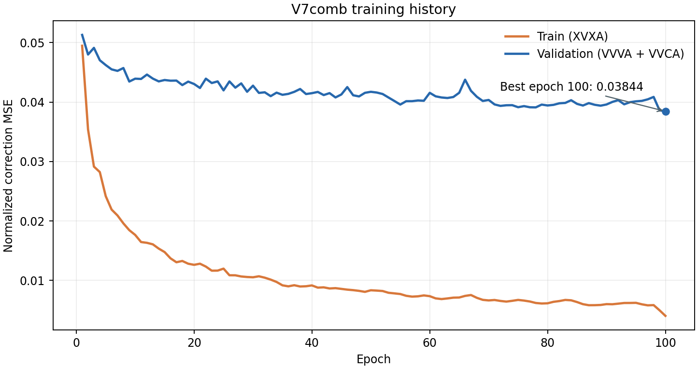
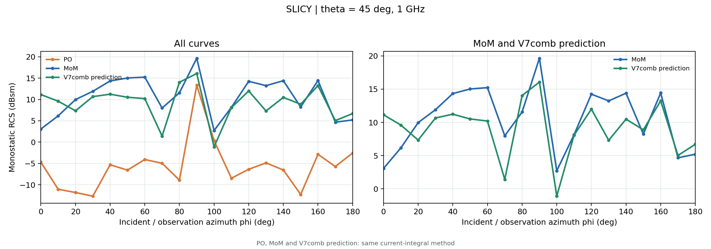
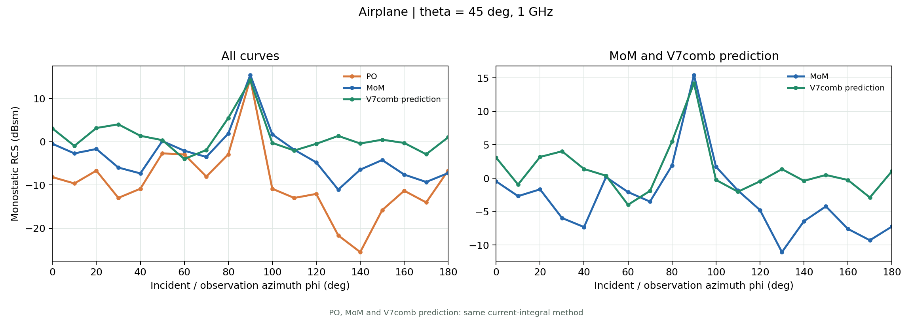

周志 2026/11/17
1. 全角度训练
五个固定几何采用 1 GHz、同一极化和统一 $\eta_0$ 归一化；每几何有 $\theta=10^\circ:5^\circ:90^\circ$、$\phi=0^\circ:5^\circ:180^\circ$ 的 629 个方向。训练 V7 使用 MG_num=4，预测 MoM 相对 PO 的六维复电流修正量。
| 用途 | 方向划分 | 每几何 | 五几何合计 |
|---|---|---|---|
| 训练 | $\theta=10^\circ:10^\circ:90^\circ$；$\phi=0^\circ:10^\circ:180^\circ$ | 171 | 855 |
| 验证 | $\theta\in\{15^\circ,35^\circ,65^\circ,85^\circ\}$；$\phi\in\{15^\circ,45^\circ,75^\circ,105^\circ,135^\circ,165^\circ\}$ | 24 | 120 |
| 其余方向 | 不进入此次训练或验证的方向 | 434 | 2170 |
| 最佳 epoch | 当轮 train MSE | 最佳 val MSE | 末轮 train / val MSE | 复电流相对 error |
|---|---|---|---|---|
| 204 | 0.001554014 | 0.01475297 | 0.001094989 / 0.01486498（第 464 轮） | record 尚未给出该训练/验证集的复算值 |

数据与数值沿用 record.md 的“全角度数据集训练”和“序号19”记录。未用 MSE 推算电流相对 error。
2. 多变体训练
五个 CAD 族各有 20 个参数变体，共 100 个几何。每个几何在 1 GHz、同一极化和 $\eta_0$ 归一化下仿真 93 个方向。文件名中首个 X/V/C 表示几何组，末尾 X/V/C 表示角度组，例如 datasetXVXA 是训练几何的训练角度。
| 维度 | X：训练组 | V：验证组 | C：留出组 |
|---|---|---|---|
| 几何变体（每个 CAD 族） | 01–12，共 12 个 | 13–15，共 3 个 | 16–20，共 5 个 |
| 入射方向（每个变体） | $\theta\in\{35^\circ,45^\circ,55^\circ\}$，$\phi=0^\circ:10^\circ:180^\circ$，57 个 | $\theta\in\{40^\circ,50^\circ\}$，$\phi=5^\circ:10^\circ:85^\circ$，18 个 | $\theta\in\{40^\circ,50^\circ\}$，$\phi=95^\circ:10^\circ:175^\circ$，18 个 |
| 训练用途 | 数据集 | 样本数 | 说明 |
|---|---|---|---|
| 训练 | datasetXVXA.pt |
3420 | 60 个 X 几何 × 57 个 X 角度 |
| 验证选参 | datasetVVVA.pt |
270 | 15 个 V 几何 × 18 个 V 角度 |
| 验证选参 | datasetVVCA.pt |
270 | 15 个 V 几何 × 18 个 C 角度 |
trainV7A.py 从全角度最佳参数初始化。下表的 error 使用完整复电流，先逐样本计算相对 Frobenius 范数，再对样本取平均；loss 是归一化修正量 MSE。数值取自 record.md 的“多变体 V7comb”记录。
| 数据 | PO 相对 error | V7comb 预测相对 error | 修正量 MSE |
|---|---|---|---|
| VVVA（270 样本） | 72.04% | 30.18% | 0.038463847 |
| VVCA（270 样本） | 71.86% | 30.20% | 0.038410645 |
| 合并验证集（540 样本） | 71.95% | 30.19% | 0.038437246 |
最佳 checkpoint 在第 100 轮，训练 MSE 为 0.004052070，最佳验证 MSE 为 0.038437246。VVCA 已用于选参，不能作为独立最终测试集；训练集的复电流相对 error 尚未复算。两次训练的数据分布不同，不能把 loss 当作同一验证集直接比较。

3. SLICY 泛化尝试
另对未纳入上述五族变体训练的 SLICY 几何进行了纯推理测试。SLICY 数据集是 1 GHz、74,762 个三角元、$\theta=45^\circ$、$\phi=0^\circ:10^\circ:180^\circ$ 共 19 个方向，使用相同的 $\eta_0$ 归一化。页面中的电流着色采用三个笛卡尔实部分量的范数 $\|\operatorname{Re}J\|_2$；电流相对误差则使用完整六维复电流。该测试与五族变体的角度/几何划分不同，应单列为新几何泛化观察。
V7comb 第 100 轮最佳参数在这 19 个方向上的逐样本平均相对误差为 53.12%，同批样本 PO 基线为 65.03%。此结果是 SLICY 的独立几何测试，并不等于对全部新 CAD 族的泛化结论。
单站 RCS 以这 19 个方向的电流积分 MoM 曲线为参照，在 dBsm 上计算 RMSE：PO 为 17.21 dB，V7comb 预测为 3.82 dB，FEKO 二次反射为 3.66 dB。预测相对 PO 降低 13.40 dB（约 77.83%）；二次反射比预测再低 0.16 dB。PO、MoM 和预测曲线由三角元复电流远场积分估算，二次反射曲线来自 FEKO 原生远场，因此后者主要用于趋势比较，不能视为完全统一计算口径下的严格误差对照。
完整对比：PO、MoM、V7comb 预测与 FEKO 二次反射。

重点对比：去除 PO 后比较 MoM、V7comb 预测与 FEKO 二次反射。

4. 飞机泛化尝试
使用同一个 V7comb 第 100 轮最佳 checkpoint，对训练和验证均未出现过的飞机几何进行纯推理。数据为 1 GHz、12,606 个三角元，固定 $\theta=45^\circ$，$\phi=0^\circ:10^\circ:180^\circ$ 共 19 个方向。电流 error 使用完整复电流的相对 L2 范数，19 个方向逐样本计算后取平均。
飞机上的 PO 平均相对 error 为 64.39%，V7comb 预测为 70.77%，比 PO 反而高 6.38 个百分点，说明模型没有正确恢复该几何上的复电流修正量。单站 RCS 以 MoM 为参照的 RMSE 从 PO 的 8.05 dB 降至预测的 5.78 dB，降低 2.27 dB（约 28.19%），但远场积分指标的局部改善不能替代完整电流误差。综合判断，这次飞机泛化结果比较失败。

5. single 泛化尝试
同一 V7comb checkpoint 也用于新的 case_single 数据。该数据为 1 GHz、12,120 个三角元，固定 $\theta=45^\circ$，$\phi=0^\circ:10^\circ:180^\circ$ 共 19 个方向；它没有参与 V7comb 的训练或验证，误差口径与飞机测试相同。
case_single 上的 PO 平均相对 error 为 69.30%，V7comb 预测降至 25.03%，降低 44.26 个百分点（相对降低约 63.88%）。单站 RCS RMSE 也由 PO 的 24.26 dB 降至预测的 1.48 dB，降低 22.78 dB（约 93.89%）。完整复电流与单站 RCS 两项指标均显著改善，因此这次 single 泛化结果比较成功。

上述飞机与 single 图中的 PO、MoM 和预测曲线均由三角元复电流进行远场积分估算，不是 FEKO 原生远场文件；因此这里只在相同积分口径下比较三条曲线。